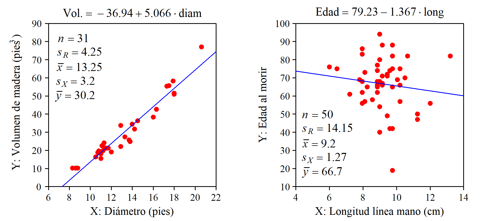
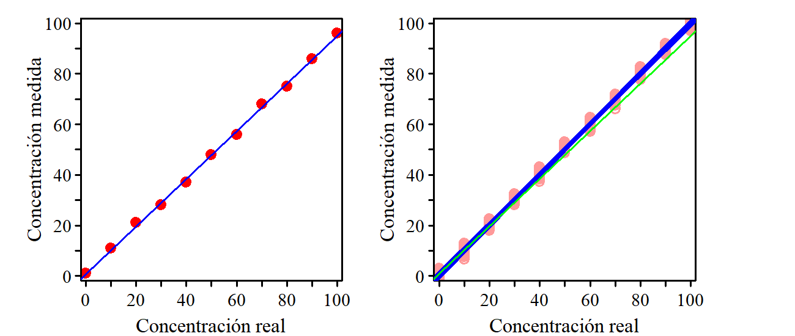

14 Regresión Simple
Cuando se observa algún tipo de relación entre dos variables, \(x\) e \(y\), puede interesar explicarla a través de una función del tipo \(y =f(x)\), donde a \(y\) le llamamos variable dependiente o respuesta y a \(x\) variable explicativa o regresora. Esta función sirve para entender qué tipo de influencia tiene \(x\) sobre \(y\), y también para realizar estimaciones sobre el valor que tomará \(y\) dado un valor de \(x\).
Si la relación es lineal tendremos la ecuación de una recta que escribiremos de la forma: \(y = b_0 +b_1x\), donde \(b_1\) es la pendiente y a \(b_0\) a veces se le denomina “constante” (aunque no lo es) o “intercepto” porque es el valor en que la recta “intercepta” al eje de ordenadas. Nosotros le llamaremos “ordenada en el origen” un nombre más largo pero que no necesita explicación.
La ecuación obtenida es un modelo estadístico que llamamos modelo de regresión. Se denomina regresión simple cuando solo se contempla una sola variable regresora y múltiple cuando se tiene más de una.
La fórmula que aparece en los libros de física sobre el alcance de un tiro parabólico es un modelo determinista. Dando valores a las variables que intervienen (ángulo, velocidad inicial) se obtiene el valor exacto del alcance. Estos modelos pertenecen al ámbito de la teoría o son una simplificación de la realidad. En la práctica intervienen otras variables no controladas, o no somos capaces de fijar las variables que intervienen en el valor exacto que deben tener, por lo que el resultado siempre está afectado por una cierta incertidumbre.
En los modelos estadísticos esa incertidumbre está explícita. Sabemos que el volumen de madera que se puede obtener de un arbol depende de su altura y del diámetro del tronco, pero dados los valores de estas variables no podemos determinar “exactametne” el volumen de madera que se va a obtener. A partir de los volumnes y de las características de otros árboles similares podemos crear un modelo estadístico.
En un modelo estadístico entendemos que la ecuación obtenida indica -con más o menos precisión- la zona en que se encuentra la respuesta para un determinado valor de la variable regresora. Si tenemos \(n\) puntos, el modelo de regresión lineal simple lo escribimos de la forma:
\[y_i = b_0 + b_1 x_i + e_i \quad \text{para} \quad i = 1, 2, \cdots, n\]
Donde el verdadero valor de la respuesta, \(y_i\) es igual al punto sobre la recta más un valor \(e_i\) que llamamos residuo y no podemos prever. Al punto sobre la recta le llamamos “valor estimado” y para distinguirlo del valor real le colocamos una especia de gorro encima: \(\hat{y}_i\). Por tanto, también podemos escribir:
\[\hat{y}_i = b_0 + b_1 x_i \quad \text{para} \quad i = 1, 2, \cdots, n\]
La figura 14.1 (izquierda) contiene un diagrama bivariante con 6 puntos y su recta ajustada, mostrando el residuo correspondiente a cada punto. A la derecha tenemos la ecuación de la recta y la identificación de sus parámetros.
Los residuos juegan un papel protagonista cuando se ajusta un modelo de regresión. El método de ajuste habitual consiste en elegir la ecuación que minimiza la suma de los cuadrados de los residuos. Trataremos este método con detalle pero vamos a empezar explorando otras posibles alternativas.
=== Interpretación basándonos en los datos de Pearson === ## Determinación de la recta ajustada
14.1 Ajuste a una recta
Si entre la respuesta y la variable regresora se observa una relación lineal se determina la ecuación de la recta que mejor se adapta a los puntos disponibles. Lo que significa “mejor” es discutible. Veamos algunas formas de hacerlo.
A ojo
Se traza la recta directamente sobre el papel o se identifican dos puntos de paso y a partir de ellos se calculan los coeficientes del modelo.
A pesar de sus evidentes limitaciones, si solo se trata de tener la recta no es un método tan malo como parece. Con un poco de práctica el ajuste no será muy distinto del “perfecto” y no se cometeran errores de bulto debido a la presencia de valores anómalos, cosa que sí puede ocurrir si se tratan los datos de forma automática sin mnirarlos.
| PROS |
|
| CONS |
|
Método de Ishikawa
Se identifica el primer y el tercer cuartil de los valores de \(X\) \((X_{Q1}\) y \(X_{Q3})\), e igual para los valores de \(Y\) \((Y_{Q1}\) y \(Y_{Q3})\). Se traza la recta por los puntos \((X_{Q1}\) y \(Y_{Q1})\) y \((X_{Q3}\) y \(Y_{Q3})\). Se obtiene una recta muy razonable sin necesidad de realizar cálculos ni de aplicar fórmulas de las que se desconoce su lógica.
| PROS |
|
| CONS |
|
Fue un ingeniero japonés, considerado uno de los artífices del llamado “milagro japonés” que condujo los productos japoneses desde la mediocridad hasta arrasar en los mercados mundiales (electrónica, fotografía, automoción,…). Una de las claves del éxito fue el uso intensivo de técnicas estadísticas para el control y la mejora de la calidad. Ishikawa es conocido por proponer el uso de herramientas sencillas, que todos puedan entender y aplicar de forma habitual.
Haciendo que la suma de los residuos sea igual a cero
Se trata de obtener los valores de \(b_0\) y \(b_1\) que cumplen la expresión:
\[\sum_{i=1}^n \left[ Y_i - (b_0 - b_1 X_i) \right]= 0\] qye es equivalente a:
\[ n\bar{Y} - nb_0 - b_1 n \bar{X} = 0\] Por tanto, con cualquier par de valores \(b_0\) y \(b_1\) que verifiquen la expresión \(\bar{Y} = b_0 + b_1 \bar{X}\), es decir, con cualquier recta que pase por (\(\bar{X}\), \(\bar{Y}\)) tendremos una suma de residuos igual a cero.
Que haya infinitas rectas que cumplan esa condición es una mala señal, porque seguro que no todas son adecuadas. Para los valores representados en la figura 14.4 tenemos que \(\bar{X}= 6\) y \(\bar{Y}= 9\). Rectas que hacen que la suma de los residuos sea igual a cero son, por ejemplo, la que tiene coeficientes \(b_0=9\) y \(b_1=0\), es decir: \(Y = 9\), o también \(b_0 = 12\) y \(b_1 = -0.5\), es decir: \(Y = 12 -0.5X\) y ambos son claramente muy malos ajustes.
| PROS |
|
| CONS |
|
Minimizando la suma del valor absoluto de los residuos
Se trata de minimizar:
\[S=\sum_{i=1}^n \left| Y_i - (b_0 - b_1 X_i) \right|= 0\]
Puede no tener solución única, pero los resultados posibles son mucho más razonables que en el caso anterior. Un problema específico de este caso es que no existen expresiones analíticas para los coeficientes debido a las dificultades en el manejo de la función “valor absoluto”.
La figura 14.5 muestra dos diagramas con los mismos 4 puntos y ñas rectas que cumplen el criterio estableciso, en todas ellas la suma del valor absoluto de los residuos es igual a 2. La línea azul, que es la misma en los dos diagramas, es la que también minimiza la suma de los cuadrados de los residuos.
| PROS |
|
| CONS |
|
Minimizando la suma de los cuadrados de los residuos
Elevamos los residuos al cuadrado en vez de usar su valor absoluto para evitar que al sumarlos se compensen los positivos y negativos. Ahora se trata de minimizar:
\[S=\sum_{i=1}^n \left[ Y_i - (b_0 - b_1 X_i) \right]^2= 0\]
En vez de decir que el criterio de ajuste ha sido “minimizar la suma de los cuadrados de los residuos”, decimos que hemos ajustado por “mínimos cuadrados”. Este es el método usado en la inmensa mayoría de los casos, produce un ajuste equilibrado de la nube de puntos y está en perfecta sintonía con otras técnicas y medidas, que se contruyen en torno a criterios similares. Un inconveniente de este método de ajuste es que el modelo obtenido es sensible a la presencia de valores anómalos, cosa que no ocurre si se minimiza la suma de valores absolutos.
En la primera fila de la figura 14.6 tenemos una situación típica en que el ajuste por mínimos cuadrados da un mejor resultado que minimizando la suma del valor absoluto. Sin embargo, en la segunda fila tenemos un cado de puntos perfectamente alineados excepto un que muy probablemente sería un valor anómalo. Si minimizamos el valor aboluto de los residuos el ajuste ignora el valor anómalo mientras que ajustado por mínimos cuadrados el valor anómalo tiene una notable influencia sobre la recta ajustada.
| PROS |
|
| CONS |
|
14.2 Mínimos cuadrados. Cálculo de los coeficientes
Existe una fórmula cerrada y con solución única para cada coeficiente, pero vamos a empezar identificando el valor de los coeficientes sin hacer uso de las fórmulas. Naturalmente, es mucho más rápido y más práctico usarlas o -mejor todavía- usar un paquete de software estadístico o una hoja de cálculo, pero hacerlo sin fórmulas permite entender perfectamente qué es lo que se está haciendo, y también descubrir algún detalle interesante.
Sin fórmulas
Realizamos a ojo una primera estimación del valor de los coeficientes. A continuación, mediante un pequeño programa -o también usando una hoja de cálculo-, hacemos un barrido de los valores de \(b_0\) y \(b_1\) en torno a los estimados, identidicando el par que minimiza la suma de los cuadrados de los residuos.
Vayamos al diagrama de la figura 14.7 (izquierda) que ya habíamos visto en las figuras 14.2 y 14.3. La recta ajustada a ojo pasa por los puntos (-4,75; 0) y (5,75, 60) por lo que sus coeficientes son: \(b_1\) = 5,71 y \(b_0\) = 27,14. Sería mucha casualidad que esos fueran los valores exactos que estamos buscando, pero no andarán muy lejos. Vamos a crear una malla de valores de \(b_0\) y \(b_1\). Los valores de \(b_0\) variarán de 2 a 8 con incrementos de 0,1 y para cada uno de esos, los de \(b_0\) irán de 20 a 35 también en saltos de 0,1. A cada combinación de esos dos valores corresponde a una recta, y a cada recta una suma de los cuadrados de los residuos. El par de valores que minimizan esa suma de cuadrados son: \(b_0\) = 27,0 y \(b_1\) = 4,8.
Con los datos de nuestro ejemplo, la superficie que representa la suma de los cuadrados de los residuos es un paraboloide donde la localización del mínimo es visulamente muy clara. Pero lo nomal es que las curvas de nivel sean muy elípticas de manera que la representación no queda tan clara. Nosotros hemos logrado esa forma regular haciendo que la media de los valores de \(X\) sea igual a cero. De esta forma, los coeficientes son independientes y las curvas de nivel apararecen como círculos prácticamente concéntricos quedando más clara la idea que queremos representar.
Usando las fórmulas
En el diagrama que representa la relación entre \(X\) e \(Y\) cada punto puede ser identificado por sus coordenadas \((x_i, y_i)\) con \(1 \leq i \leq n\) siendo \(n\) el número total de puntos. [creo que esto es redundante y habría que mejorarlo]
Cada uno de los puntos tiene un residuo asociado \(e_i\) y ese residuo es la diferencia entre el valor real de \(y\), es decir, \(y_i\) y su valor estimado \(\hat{y}_i\), el que estará sobre la recta y que será igual a \(b_0 + b_1 x_i\). Por tanto, el valor del residuo asociado al punto \(i\) lo podemos escribir de la forma:
\[ e_i = y_i - \left( b_0 + b_1 x_i \right) \] Por tanto, la suma de los cuadrados de los residuos, \(S\), será:
\[ S = \sum_{í=1}^n \left(y_i - b_0 - b_1 x_i \right )^2 \]
Tanto los valores de \(y_i\) como los de \(x_i\) vienen dados. La suma de cuadrados \(S\) es función de los valores de \(b_0\) y de \(b_1\). Se trata de hallar los valores de \(b_0\) y de \(b_1\) que minimizan esa suma de cuadrados. El mínimo lo tendremos en el punto en que la derivada de \(S \left(b_0, b_1 \right )\) respecto a \(b_0\) y respecto a \(b_1\) es igual a cero. Seguro que es un mínimo porque el máximo no está definido.
\[ \frac{\partial S}{\partial b_0} = -2 \sum_{í=1}^n \left(y_i - b_0 - b_1 x_i \right ) \]
\[ \frac{\partial S}{\partial b_1} = -2 \sum_{í=1}^n \left(y_i - b_0 - b_1 x_i \right ) x_i \]
Igualando a cero estas expresiones:
\[ \sum_{í=1}^n y_i - nb_0 - b_1 \sum_{í=1}^n x_i = 0 \tag{14.1}\]
\[ \sum_{í=1}^n x_i y_i - b_0 \sum_{í=1}^n x_i - b_1 \sum_{í=1}^n x_i^2 = 0 \tag{14.2}\]
Dividiendo por \(n\) todos los términos de la ecuación 14.1 tenemos:
\[ b_0 = \bar{y} - b_1 \bar{x} \]
De la anterior expresón para \(b_0\) también se decude que \(\bar{y} = b_0 + b_1\bar{x}\). Es decir, la recta ajustada minimizando la suma de los cuadrados de los residuos siempre pasa por el punto \((\bar{x}, \bar{y})\) .
Sustituyendo la expresión de \(b_0\) en la ecuación 14.2 tenemos:
\[ \sum_{í=1}^n x_i y_i - \bar{y} \sum_{í=1}^n x_i + b_1\bar{x} \sum_{í=1}^n x_i- b_1 \sum_{í=1}^n x_i^2 = 0 \]
Para aligerar la notación no pondremos los límites a los sumatorios, que siempre son desde \(i=1\) hasta \(n\). Despejando \(b_1\) llegamos a:
\[ b_1 = \frac{\sum x_i y_i - \bar{y} \sum x_i}{\sum x_i^2 - \bar{x} \sum x_i} \] También la expresión de \(b_1\) se suele dar de la forma (ver Apéndice 10.1):
\[ b_1 = \frac{\sum (x_i - \bar{x})(y_i - \bar{y})}{\sum (x_i - \bar{x})^2} \tag{14.3}\]
A partir de la ecuación 14.3 y recordando las expresiones de la covarianza y del coeficiente de correlación, llegamos a una expresión que también se ve con frecuencia en los libros de texto, seguramente porque una calculadora sencilla da directamente los tres valores que intervienen:
\[ b_1 = \frac{Cov(XY)}{s_X^2} = \frac{r_{XY} s_X s_Y}{s_X^2} = r_{XY} \frac{s_Y}{s_X} \] Calculando los coeficientes que corresponden a los datos de la figura 14.7 se obtiene:
\[ b_0 = 26,9615 \qquad \qquad b_1 = 4,8616 \] Ahora sí, con todos los decimales que queramos, aunque dar más decimales de los que tienen los datos es añadir números que no aportant ninguna información, dan una falsa sensación de precisión y complican la lectura del resultado.
Sean, por ejemplo, los puntos: (4; 3), (6; 8), (8; 12), (10; 10), (12; 12). La recta ajustada es: \(y = 1+x\). Si en vez de ajustar \(y = f(x)\) se ajusta \(x=f(y)\) ¿se obtendrá la ecuación resultante de despejar \(x\) en \(y=f(x)\), es decir: \(x = -1 + y\)? Si ajustamos \(x=f(y)\) la ecuación será: \(x=1,57+0,714x\). No es lo mismo minimizar la suma de los cuadrados de los residuos medidos en dirección vertical que en dirección horizontal (esto último no son los residuos).
14.3 Calidad del ajuste
El gráfico de la izquierda de la figura 14.8 muestra la relación entre la longitud de la circunferencia (X) de los troncos de un determinado tipo de árbol y el volumen de madera (Y) que se puede obtener de ellos (Fuente: Wolfram_Data_Repository 2016). Se observa que a más circunferencia mayor volumen de madera, tal como era de esperar, y la ecuación de la recta ajustada es útil para estimar cuanta madera se obtendrá de un tronco de determinado diámetro. Sin embargo, el gráfico de la derecha se ha realizado con los datos de un estudio publicado por Wilson y Mather (1974) citado por Draper y Smith (1998) donde se analiza la relación entre la edad al morir y la longitud de cierta línea de la mano a partir de una muestra de 50 personas fallecidas. A la vista del diagrama queda claro que no hay ninguna relación entre ambas variables. En este caso el modelo ajustado no sirve absolutamente para nada. Pero los dos modelos tienen el mismo aspecto y solo a la vista del valor de sus coeficientes es imposible saber cual de los dos es útil.
Es necesario, por tanto, completar el modelo con una medida que informe de la calidad del ajuste obtenido. Esa medida es el coeficiente de determinación \(R^2\).
Para calcular el valor de \(R^2\) empezamos poniéndonos en el peor de los casos: suponemos que \(X\) e \(Y\) son independientes, es decir, que el valor de \(X\) no aporta ninguna información sobre el valor de \(Y\). En este caso, la recta que muestra la relación entre ambas variables es una recta horizontal: la estimación del valor de \(Y\) es siempre la misma, sin importar el valor de \(X\), y la mejor apuesta para ese valor de \(Y\) -a falta de cualquier otra información- es su valor medio \(\bar{y}\). A la suma de los cuadrados de los residuos correspondientes a esa recta horizontal que pasa por \(\bar{y}\) le llamamos \(Q_Y\).
A continuación calculamos la suma de los cuadrados de los residuos correspondientes a nuestra recta ajustada (la que minimiza la suma de los cuadrados de los residuos) y le llamaremos \(Q_R\). Cuanto mejor sea el ajuste menor será el valor de \(Q_R\) y mayor la diferencia entre \(Q_Y\) y \(Q_R\).
El valor de \(R^2\) es igual a la proporción de \(Q_Y\) explicada por \(X\), es decir, la proporción en que disminuye \(Q_Y\) gracias a la introducción de \(X\) como variable explicativa, es decir:
\[ R^2 = \frac{Q_Y - Q_R}{Q_Y} \]
Veamos este cálculo en un ejemplo con datos sencillos. En la figura 14.9 tenemos 5 puntos que podrían representar la relación entre el peso y la estatura de 5 individuos. Si, ignorando la información aportada por la estatura, siempre damos una estimación del peso igual a su valor medio, será como ajustar a una recta horizontal y tendremos una suma de los cuadrados de los residuos \(Q_Y = 56\). Sin embargo, si utilizamos la información que aporta la estatura y realizamos el ajuste minimizando la suma de los cuadrados de los residuos tenemos \(Q_R = 16\).
Hemos reducido la suma de los cuadrados de los residuos de 56 a 16, por tanto:
\[ R^2 = \frac{Q_Y - Q_R}{Q_Y} = \frac{56 - 16}{56} = 0.7143 \]
Normalmente nos referimos a este valor como un porcentaje. En este caso sería el 71.43%. En los ejemplos de la figura 14.8 estos valores son del 93,5% (volumen de madera) y 1,5% (edad al morir).
Efectivamente, en el caso que estamos considerando de regresión simple, el coeficiente de determinación \(R^2\) es igual al cuadrado del coeficiente de correlación \(r\). Este último puede variar entre \(-1\) y \(1\) por lo que, obviamente, \(R^2\) varía entre 0 y 1. La demostración es corta y fácil de encontrar en internet. Por ejemplo en:
14.4 Relación no lineal entre \(X\) e \(Y\)
Si a la vista del diagrama bivariante se observa que la relación entre \(X\) e \(Y\) no es lineal, se puede utilizar el aspecto de la nube de puntos y el conocimiento del fenómeno que se estudia para plantear un modelo que se ajuste a los datos. Los modelos polinómicos de segundo grado son muy versátiles y pueden ser una buena opción. También se puede ajustar a modelos linealizables transformando los valores de \(X\), los de \(Y\), o ambos. Si nuestros datos se ajustan a una función del tipo \(y = \beta_0 e^{\beta_1 x}\), podemos realizar el cambio \(y' = \ln y\) obteniendo el modelo lineal: \(y' = \ln \beta_0 + \beta_1 x\) a partir del cual se deducen de forma inmediata los coeficientes del modelo original. Interesados en este tipo de transformaciones para linealizar la dependencia pueden consultar Montgomery y Peck (1992) pág. 90. o Peña (2002) pág. 314.
La figura 14.10 (izquierda) muestra los datos de producción de electricidad de un aerogenerador según sea la velocidad del viento (datos en: Montgomery y Peck (1992), pág. 92). Se observa una relación no lineal ya que cuando la velocidad del viento es baja, pequeños incrementos en la velocidad tienen un impacto importante en la producción de electricidad, mientras que para velocidades altas la producción tiende a estabilizarse. Ajustando a una parábola se obtiene \(y = -1,156 + 0,7229x -0,03812x^2\) con un coeficiende de determinación \(R^2 = 96,8%\), lo cual no está nada mal.
Otra opción es estudiar la producción de electricidad en función de la inversa de la velocidad del viento (figura de la derecha). Creamos la variable \(X' = 1/X\) y obtenemos el ajuste: \(y = 2,979 - 6,935/x\) con un \(R^2 = 97,9%\) que es también un valor excelente y, además, con un modelo más compacto. En general, trabajar con la inversa de \(X\) puede ser una buena alternativa al modelo cuadrático.
Hay que tener en cuenta que el modelo más adecuado no necesariamente es el que tiene el \(R^2\) más elevado. Nos interesa que el modelo sea compacto y que pueda interpretarse y sea coherente con nuestro conocimiento del fenómeno en estudio. Si vamos aumentando el grado del polinomio ajustado cada vez tendremos un mayor valor de \(R^2\) incluso, si tenemos pocos datos, podemos llegar a un \(R^2\) del 100% siendo el modelo obtenido totalmente inútil.
Volviendo a los datos de la figura 14.9 donde a partir de los pesos de 5 personas (efectivamente son muy pocas, es solo un ejemplo) queremos modelar la relación entre peso y estatura, el modelo lineal es el más razonable. Si ajustamos los datos a un modelo cuadrático se tiene un máximo de peso en torno a una estatura de 175 cm que no tiene sentido. El polinomio de tercer grado presenta una forma que tampoco parece razonable y el de cuarto grado es un modelo con 5 parámetros (los 4 coeficientes y la ordenada en el origen) y como tenemos 5 puntos ajusta perfectamente, pero ni es un modelo razonable ni sirve en absoluto para estimar el peso de un individuo a partir de su altura (sí lo explica para los 5 individuos usados para construir el modelo, pero para esos ya lo sabíamos). Recuerde que dos puntos se ajustan perfectamente a un modelo con dos parámetros (una recta) tres puntos a un modelo con tres parámetros, … etc. Estos son modelos que explican muy bien lo que ya se sabe, pero son totalmente inútiles para hacer predicciones que es lo que -en general- se pretende.
14.5 Transformación logarítmica
En algunos casos, los valores de \(X\), los de \(Y\), o ambos, siguen una distribución asimétrica, con valores que aparecen agrupados cerca del origen y muy dispersos hacia los valores altos. Un ejemplo típico de esta situación se da al analizar la relación entre el peso del cerebro y el peso de cuerpo en 62 especies de mamíferos (Weisberg 2014, pág. 186). La mayoria de esos mamíferos pesan poco –la mediana es de 3,34 kg– pero algunos, como los elefantes, pesan varias toneladas y algo similar ocurre con el peso de los cerebros. Al realizar el diagrama bivariante del peso del cerebro (\(Y\)) frente al peso de cuerpo (\(X\)) prácticamente todos los puntos aparecen amontonados en la zona próxima al origen, En estas condiciones ajustar un modelo de regresión no tiene sentido, porque la mayoría de datos actúan como un solo punto y los que estan alejados tienen una gran influencia sobre la recta ajustada.
Uno puede caer en la tentación de considerar a los elefantes como valores anómalos y eliminarlos, pero esa no es una buena decisión por dos razones:
Restringe la validez del modelo, ya no valdrá para todos los mamíferos considerados.
Al eliminar esos valores y reescalar el gráfico aparecen otros valores anómalos: la persona humana (que da más reparo eliminar), la jirafa, el caballo, la vaca… y al final nos vamos quedando sin puntos.
En casos como este, la transformación logarítmica “estira” los datos permitiendo un ajuste en el que todos los puntos tienen una influencia similar. Realizando esta transformación en nuestros datos se obtiene -casi parece un milagro- una nube de puntos tal como esperamos tener cuando ajustamos a una recta.
El modelo obtenido es:
\[\log(Y) = 0,9271 + 0,7517 \log(X) \quad \text{con} \quad R^2 = 91,95\%\] Volviendo a las variable soriginales nos queda (el cuerpo está en kg y el del cerebro en g):
\[Y = 8,45 · X^{3/4}\] La transformación logarítmica de los datos es, sin duda, una buena opción en casos como este, pero también tiene efectos secundarios no deseados.
En primer lugar hay que tener en cuenta que los residuos (diferencia entre el valor real y el valor previsto) también están en escala logarítmica. POr ejemplo, para el elefante africano (el mayor, parece que la recta pasa por el punto) el valor real del peso del cerebro es de 5712 g y la previsión es de 6229 (+9%) y para el elefante asiático el valor real es de 4603 g mientras que el valor previsto es de 3031 g (-34%). El mamífero que presenta mayor residuo positivo es la persona humana (valor real: 1320, previsto: 185, -86%) mientras que el de mayor residuo negativo corresponde al Yapok (en inglés: Water opossum). Seguramente más interesante que el modelo en sí es conocer qué animales se separan más -por encima y por debajo- del patrón general. Sobre este tema existen muchas publicaciones. Los interesados pueden empezar explorando la Wikipedia y las referencias que incluye.
En efecto, sea \(y = \ln (x)\) y \(z = \log_{10}(x)\). Tendremos que \(e^y = x\) y también que \(10^z = x\), luego \(e^y = 10^z\). Por tanto, \(\ln(e^y) = \ln(10^z)\) y es inmediato que: \(y = \ln(10)·z\).
Por tanto, cambiar la base del logaritmo equivale a multiplicar por una constante. En particular, para pasar del logaritmo neperiano al decimal basta con multiplicar por \(\ln(10)\). El aspecto del diagrama bivariante es el mismo con independencia de la base utilizada para la transformación logarítmica, solo cambian las escalas, aunque para que al volver a las variables originales la expresión sea más compacta puede interesar elegir una base u otra.
Posibilidad de usar los datos de Hooker, parece relación lineal pero no lo es y la transformación logarítmica da buen resultado
14.6 Las cosas se complican: Lo que tenemos es una muestra
La interpretación de los resultados se complica cuando caemos en la cuenta de que los datos disponibles son solo una muestra de la población de interés. Supongamos que deseamos estudiar la relación entre peso y estatura en los jóvenes de cierta edad (haríamos bien en separar hombres y mujeres, pero aquí vamos a ignorar ese aspecto que trataremos en el siguiente capítulo) y que disponemos de una muestra de -pongamos- 20 jóvenes. Con los datos de esa muestra ajustamos una recta pero, en realidad, esa no es la recta que andamos buscando. Si hubiéramos tomado otra muestra la recta sería otra -distitnta- pero tan válida como la primera. Entonces, ¿cómo se interpreta la recta obtenida?
Como en otros casos, una forma de ver lo que ocurre es simulando. En los diagramas de la figura 14.14 las estaturas (\(X\)) se han generado aleatoriamente de una distribución N(170; 8) y a cada estatura se le ha asignado un peso (\(Y\)) mediante la expresión \(Y = X -100 +e\), donde \(e\) un valor también generado aleatoriamente de una distribución N(0; 5). Tanto los valores de la estatura (en cm) como los obtenidos para los pesos (en kg) son valores razonables para una población joven. Hemos repetido la simulación 6 veces y, como es natural, cada vez hemos obtenido unos datos distintos y, por tanto, también una recta ajustada distinta.
En la figura 14.15 (izq.) se han superpuesto los 6 diagramas anteriores pudiéndose observar el haz de rectas que se obtiene. A la derecha tenemos la misma situación superponiendo 50 simulaciones (cada una con 20 datos) añadiendo, de color verde, la recta que representa el modelo teórico, es decir, la población.
Distribución de los coeficientes
La buena noticia es que si los datos cumplen unas ciertas condiciones –que en general se cumplirán– los valores de los coeficientes pertenecen a distribuciones Normales con parámetros conocidos. Siguiendo con el ejemplo anterior hemos repetido 10.000 veces la simulación obteniendo otras tantas rectas ajustadas. La 14.16 muestra los histogramas de los 10.000 valores obtenidos para \(b_0\) y \(b_1\).
Observe que las medias de las distribuciones coinciden con verdadero valor del parámetro estimado (estamos de suerte). Las desviaciones típicas dependen de:
Número de datos: Cuanto más datos mayor información y menos incertidumbre, por tanto, menos desviación típica en la distribución de los coeficientes.
Desviación típica de la respuesta: A mayor variabilidad de la respuesta mayor incertidumbre y mayor variabilidad en la distribución del los coeficientes.
El rango de variación de los valores de la variable regresora: Si los valores de \(x\) están muy próximos a su media habrá mayor variabilidad en los distribución de los coeficientes. Quizá este aspecto no es tan intuitivo como los anteriores, pero se entiende muy bien a la vista de un gráfico como el de la figura 14.16. En la izquierda tenemos el mismo gráfico que en la figura 14.15 con valores de X generados de una distribución N(170; 8) mientras que en el de la derecha se ha construido de la misma forma pero los valores de X se han generadod de una N(170; 3). Al tener menos variabilidad los valores de X tenemos mayor variabilidad en los valroes de los coeficientes.
Conocer la distribución de los coeficientes hace posible calcular intervalos de confianza o realizar constrastes de hipótesis sobre sus valores.
Condiciones que deben reunir los datos
Para que los coeficientes tengan las distribuciones descritas los datos utilizados para ajustar el modelo deben cumplir las siguientes condiciones:
- Distribución de \(Y\): Dado un valor de \(X\), los valores de \(Y\) deben seguir una distribución Normal. Si \(X\) es la estatura e \(Y\) es el peso, no hace falta suponer que el peso –globalmente– sigue un distribución Normal, pero sí que los pesos para las personas de una determinada estatura siguen esa distribución.
Variabilidad de \(Y\): La variabilidad de \(Y\) no depende del valor de \(X\). En nuestro ejemplo sería suponer que la variabilidad en el peso de las personas que miden 1,60 es la misma que en las personas que miden 1,80 m. Es posible que esto no sea exactamente así porque es habitual que cuando aumenta el nivel de la respuesta aumente también su variabilidad. Si esto ocurre lo veremos en el diagrama bivariante: la nube de puntos se irá ensanchando a medida que aumenta el valor de \(X\). En este caso quizá convenga transformar los datos, aunque ya estaríamos ante una situación más complicada que las que pretendemos tratar aquí.
Valores de \(X\): No hay ninguna exigencia especial sobre estos valores. Solo es necesario que la variable sea cuantitativa. Es decir, el día de la semana, codificado como: lunes = 1, martes = 2, … no puede ser una variable regresora porque el modelo entedería que el domingo es igual a 7 veces el lunes. Aun así, también hay formas de incluir este tipo de variables. Lo veremos en el próximo capítulo en el caso de que solo puedan tomar dos valoros posibles.
Independencia de los residuos: La desviación respecto al valor previsto (valor sobre la recta) en en un punto no da ninguna pista sobre la desviación en el punto siguiente. Esto no ocurre con las variables que evolucionan en el tiempo, como la temperatura o la cotización de acciones en la bolsa, en que el valor de un día está influenciado por el valor de día anterior.
Cuando se ajustan modelos de regresión simple, la observación del diagrama bivariante de \(Y\) frente a \(X\) ya permite valorar si es razonable suponer que se cumplen los supuestos requeridos. Si nada hace suponer lo contrario, supondremos que se cumplen. En realidad nunca se cumpliran “exactamente” pero si el comportamiento de los datos no se aleja mucho de los supuestos realizados, los intervalos de confianza y las pruebas de significación en que estamos interesdos seguirán siendo válidos a efectos prácticos.
Significación de los coeficientes. Visión intuitiva
Usaremos los datos que ya vimos (apartado 14.3 ) sobre el volumen de madera que se obtiene de un árbol en función del diámetro de su tronco y sobre la edad al morir en función de la longitud de una línea de la mano. La figura 14.18 contiene las rectas ajustadas y también los valores que usaremos para la simulación.
===No sé si esto se puede meter en algún sitio: Aunque a la vista de los gráficos ya se ve muy claro que el caso del volumen de madera la pendiente es significativa y en el de la línea de la mano seguramente no lo es, vamos a comprobar por simulación que, efectivametne, es así===

Si no hay ninguna relación entre la variable regresora (\(X\)) y la respuesta (\(Y\)), la pendiente de la recta estará en torno a cero (será igual a cero en la población, pero no disponemos de esos datos que –además– son solo un modelo teórico). Para ver lo que significa “en torno a cero” en los casos que estamos tratando, podemos simular nubes de puntos manteniendo las características de \(X\) e \(Y\) de forma independiente, suponiendo que no existe ninguna relación entre ellas.
En el caso del volumen de madera empezamos generando 31 números aleatorios (una cantidad igual a nuestro tamaño de muestra) que asignamos al diámetro de los troncos. Para que estos datos se puedan considerar del mismo tipo de los que tenemos en la muestra es razonable generarlos de una distribución Normal con la media \((\bar{x} = 13.25)\) y la desviación típica \((s_X = 3.2)\) de los valores que aparecen en la muestra, es decir: \(X \sim N(13.25; 3.2)\). A continuación, a cada valor de \(X\) le hacemos corresponder un valor de \(Y\) igual a la media de los valores disponibles \((\bar{y} = 30.2)\) añadiendo un número aleatorio de una distribución Normal con media cero (ni sube ni baja de forma sistemática el valor de la respuesta) y una desviación típica igual a la que presentan los residuos del modelo ajustado \((s_R = 4.25)\). Por tanto, tendremos: \(Y = 30.2 + N(0; 4.25)\).
Para el modelo de la edad al morir hacemos exactamente lo mismo con los valores que corresponden. La tabla 14.6 contiene los usados en cada caso.
| \(n\) | Valores de \(X\) | Valores de \(Y\) | |
|---|---|---|---|
| Volumen de madera: | 31 | \(N(13.25; 3.2)\) | \(30.2 + N(0; 4.25)\) |
| Edad al morir | 50 | \(N(13.25; 3.2)\) | \(66.7 + N(0; 14.15)\) |
Para cada conjunto de puntos simulados se ha calculado la recta ajustada. En los dos casos la simulación se ha repetido 50 veces y en los diagramas de la figura 14.19 se han ido acumulando tanto los puntos como las rectas ajustadas. También se ha añadido, de color verde, la línea correspondiente a los datos de la muestra. Está muy claro que en el caso del volumen de madera, la recta ajustada con los datos de la muestra no se puede confundir con los generados aleatoriamente suponiendo que no hay relación entre ambas variables. Sin embargo, en el caso de la edad al morir, la recta que corresponde a los datos disponibles se confunde con las que hemos simulado, por tanto, el valor de la pendiente queda explicado por la variabilidad intrínseca de los datos, diremos que esa diferencia no es estadísticamente significativa.
Pruebas de significación formales
Aunque pueden no ser necesarias en casos tan claros como los que acabamos de ver, conocer la distribución de los coeficientes nos permite realizar pruebas de significación de manera más directa, sin necesidad de realizar simulaciones.
Una prueba de significación es un caso particular de contraste de hipótesis donde se contrasta que el valor del parámetro es igual a cero. Significación equivale a “significativamente distinto de cero” es decir, que la variabilidad aleatoria no justifica la diferencia respecto a cero.
Lo habitual es contrastar que el coeficiente, ya sea \(\beta_0\) o \(\beta_1\) es igual a cero frente a la alternativa de que es distinto de cero.
Sobre el valor de la ordenada en el origen, \(\beta_0\)
Tiene interés cuando hay razones para suponer que la recta pasa por el origen de coordenadas. Permite verificar que los resultados obtenidos no están en contradicción con ese supuesto.
Si los datos cumplen las condiciones que antes hemos comentado tendremos:
\[b_0 \sim N \left(\beta_0; \; \sigma_{b_0} \right)\] luego si \(\beta_0 = 0\):
\[ \frac{b_0-0}{\sigma_{b_0}} \sim N (0; 1) \]
Pero como no conocemos \(\sigma_{b_0}\) y usamos su estimación \(s_{b_0}\), el estadístico de prueba es:
\[ T = \frac{b_0}{s_{b_0}} \] y su distribución de referencia es una \(t\)-Student con \(n-2\) grados de libertad, siendo \(n\) el número de datos disponibles. Los 2 grados de libertad que se pierden tienen que ver con las restricciones que presentan los residuos cuando el modelo se ha ajustado por el método de los mínimos cuadrados \(\left ( \sum e_i = 0 \; \text{y} \; \sum e_ix_i = 0 \right )\).
Como regla general, si \(|T| > 2\), es decir, el valor obtenido está a más de dos desviaciones típicas de cero, se rechaza la hipótesis nula. Por supuesto, también se puede calcular el \(p\)-valor exacto y tomar la decisión de acuerdo con el nivel de significación establecido.
Si se decide eliminar \(b_0\) del modelo es necesario recalcular el valor de \(b_1\) con una fórmula específica para esta situación puesto que ya no estamos aplicando el criterio de los mínimos cuadrados. En el apéndice 10.4 se comentan algunas peculiaridades de este caso particular.
Sobre el valor de la pendiente de la recta, \(\beta_1\)
Este contraste siempre tiene interés. Se trata de verificar que la pendiente de la recta es significativamente distinta de cero. Si no lo es, una recta horizontal es compatible con los datos por lo que no se puede afirmar que haya relación entre la variable regresora y la respuesta.
El procedimiento es idéntico que para \(\beta_0\). El estadístico de prueba ahora es:
\[ T = \frac{b_1}{s_{b_1}} \sim t-\text{Student} \;\text{con} \; n-2 \; \text{grados de libertad} \]
Aquí texto
Resultados presentados por los paquetes de software estadístico
En general, los paquetes de software estadístico además de presentar los coeficientes del modelo también presentan los \(p\)-valores asociados a los contrastes que hemos comentado. La figura 14.19 muestra parte de la salida que proporciona el paquete de software estadístico Minitan en los dos casos que estamos considerando. Los coeficientes se calculan con las fórmulas que hemos deducido en el apartado 14.2 y sus desviaciones típicas con las que aparecen en el apéndice 10.2. Tal como hemos visto, el T-value que aparece en el listado es simplemente el cociente entre el coeficiente (Coef) y su desviación típica (SE Coef) y el p-valor (P-Value) es el área de cola -multiplicado por 2, ya que es una prueba bilateral- que deja ese T-Value en una distribución t-Student con \(n-2\) grados de libertad, siendo \(n\) el número de puntos usados en cada caso.
También puede interesar contrastar otros valores para la pendiente de la recta. Para verificar que un aparato mide correctamente la concentración de monoxido de carbono (CO) en el aire, se mide la concentración de 11 muestras con valores conocidos. Los resultados obtenidos son los que se indican en la tabla 14.7 (Navidi 2010, pág. 585).
| Valor real | 0 | 10 | 20 | 30 | 40 | 50 | 60 | 70 | 80 | 90 | 100 |
| Valor medido | 1 | 11 | 21 | 28 | 37 | 48 | 56 | 68 | 75 | 86 | 96 |
La figura 14.21 (izq.) muestra el diagrama bivariante de los valores medidos frente a los reales con su recta ajustada. El aparato estará bien calibrado si -en promedio- el valor de la concentración medida es igual a la concentración real. Es decir, si los datos se ajustan al modelo: \(y = x\).

Usando Minitab tenemos los coeficientes del modelo y la prueba de significación para sus valores (figura 14.22).
Vemos que la ordenada en el origen (Minitab le llama “Constant” pero ya dijimos que esta no nos parece una denominación adecuada) no es significativamente distinta de cero por lo que hemos recalculado el modelo sin ese término. En el nuevo modelo el valor de \(b_1\) (coeficiente de la concentración real) es claramente significativo (significativamente distinto de cero) pero no es eso lo que nos preocupa. Lo que queremos saber es si es significativamente distinto de 1. Minitab no lo hace automaticamente pero es muy fácil hacerlo a mano:
\[ T = \frac{b_1-1}{s_{b_1}} = \frac{0.95351-1}{0.00598} = -7.77\] Si efectivamente \(\beta_1 = 1\) el valor de \(T\) pertenece a una distribución \(t\)-Student, pero si lo fuera su valor estaría comprendido aproximadamente entre -2 y 2, y el valor que hemos obtenido está muy lejos de este intervalo. Por tanto, la hipótesis nula de que \(\beta_1=1\) queda descartada. El aparato no está bien calibrado.
En la figura 14.21 (der.) se han representado las rectas ajustadas (color azul) de valores de la concentración medida (\(y\)) en función de la concentración real (\(x\)) generados con el modelo \(y = x + e\) siendo \(e\) valores de una distribución Normal con media cero y una desviación típica igual a la que presentan los residuos del modelo obtenido. La recta ajustada con los datos reales aparece de color verde (es la misma que tenemos en el diagrama de la izquierda), claramente se ve que no se confunde con las generadas aleatoriamente suponiendo que el aparato está bien calibrado, a partir de una concentración de 50 tiende a dar valores menores que los reales.
14.6.1 Intervalos de confianza para la respuesta
-Intervalos de confianza para las predicciones.
Mas/menos dos sigmas de los residuos y listos.
-IC para las observaciones.
Apéndice 10.1
Dos fórmulas equivalentes para \(b_1\)
En la expresión:
\[ b_1 = \frac{\sum (x_i - \bar{x})(y_i - \bar{y})}{\sum (x_i - \bar{x})^2} \]
Podemos poner el numerador de la forma:
\[\begin{equation} \begin{split} \sum (x_i - \bar{x})(y_i - \bar{y}) &= \sum x_i y_i - \bar{x} \sum y_i - \bar{y} \sum x_i + n\bar{x}\bar{y} =\\\\ &= \sum x_i y_i -2n\bar{x}\bar{y} + n\bar{x}\bar{y} =\\\\ &= \sum x_i y_i -n\bar{x}\bar{y} = \\\\ &= \sum x_i y_i - \bar{y} \sum x_i \end{split} \end{equation}\]y el denominador:
\[\begin{equation} \begin{split} \sum (x_i - \bar{x})^2 &= \sum x_i^2 - 2 \bar{x} \sum x_i + n \bar{x}^2 =\\\\ &= \sum x_i^2 -n\bar{x}^2 =\\\\ &= \sum x_i^2 - \bar{x} \sum x_i \end{split} \end{equation}\]Por tanto,
\[ b_1 = \frac{\sum (x_i - \bar{x})(y_i - \bar{y})}{\sum (x_i - \bar{x})^2} = \frac{\sum x_i y_i - \bar{y} \sum x_i}{\sum x_i^2 - \bar{x} \sum x_i} \]
Apéndice 10.2
Distribución de los coeficientes de la recta ajustada
Las expresiones generales de las distribuciones de los coeficientes son:
\[\begin{equation} \begin{aligned} b_0 &\sim N \left(\beta_0; \sqrt{\frac{\sigma^2}{n} \frac{\sum x_i^2}{\sum \left(x_i - \bar{x} \right)^2 }} \right) \\[10pt] b_1 &\sim N \left(\beta_1; \sqrt{\frac{\sigma^2}{\sum \left(x_i - \bar{x} \right)^2}} \right) \end{aligned} \end{equation}\]Falta deducción.
Apéndice 10.3
Ejemplo de datos que no cumplen las condiciones requeridas
Veamos un caso en que no se cumplen las condiciones requeridas sobre el comportamiento de los datos para poder realizar pruebas de significación y calcular intervalos de confianza sobre los parámetros del modelo de la forma habitual.
Hemos generado 6 números aleatorios de una distribución uniforme entre 0 y 100. Esos números definen 3 puntos en el plano y hemos calculado el perímetro y el área del triángulo definido por esos tres puntos. Repitiendo esta operación 200 veces hemos obtenido el gráfico de la figura *** donde se represetna el áera de cada triángulo en función de su perímetro. Aunque el coeficiente de correlación es claramente significativo, no es una buena idea intentar explicar el área en función del perímetro.
Apéndice 10.4
El caso de la recta forzada a pasar por el origen
Comentarios obre cuando se puede quitar b0 del modelo y, quizá, que cuandos e fuerza que la recta pase por el origen pierde interés el valor de R2. Si se fuera que pase por el origen ya no estamos ajustando por el método de los mínimos cuadrados. La pendiente de la recta es fácil de deducir: y no tiene interés el valor de R2
+++++++++++++++
Observe que las condiciones se exigen al comportamiento de los errores, es decir, de los valroes en la población, lo hacemos con los residuos que es lo más parecido.
Cuando se construyen modelos de una cierta complejidad conviene analizar los residuos con detenimiento antes de dar el modelo por bueno para detectar posibles comportamientos que pongan de manifiesto el inclumplimiento de las condiciones que deben reunir los datos.